?
RimPunk/Cyberware/_OperatingSystem.png
covers 17
?
RimPunk/Cyberware/_IntegumentarySystem.png
covers 15
?
RimPunk/Cyberware/_Arm.png
covers 14
?
RimPunk/Weapons/_Pistol.png
covers 14
?
RimPunk/Cyberware/_PrefrontalCortex.png
covers 13
?
RimPunk/Cyberware/_Skeleton.png
covers 12
?
RimPunk/Cyberware/_NervousSystem.png
covers 11
?
RimPunk/Cyberware/_CirculatorySystem.png
covers 11
?
RimPunk/Weapons/_Shotgun.png
covers 9
?
RimPunk/Weapons/_SMG.png
covers 8
?
RimPunk/Cyberware/_Face.png
covers 7
?
RimPunk/Weapons/_Rifle.png
covers 7
?
RimPunk/Cyberware/_Hands.png
covers 6
?
RimPunk/Weapons/_Melee_Knife.png
covers 6
?
RimPunk/Weapons/_Melee_Club.png
covers 6
?
RimPunk/Weapons/_Revolver.png
covers 5
?
RimPunk/Cyberware/_Legs.png
covers 4
?
RimPunk/Weapons/_Arasaka_Pistol.png
covers 4
?
RimPunk/Weapons/_Rostovic_Shotgun.png
covers 4
?
RimPunk/Weapons/_Arasaka_SMG.png
covers 3
?
RimPunk/Weapons/_MG.png
covers 3
?
RimPunk/Weapons/_Precision.png
covers 3
?
RimPunk/Weapons/_Militech_Pistol.png
covers 3
?
RimPunk/Weapons/_Sniper.png
covers 3
?
RimPunk/Weapons/_Melee_Machete.png
covers 3
?
RimPunk/Weapons/_Arasaka_Rifle.png
covers 2
?
RimPunk/Weapons/_ConstitutionalArms_Pistol.png
covers 2
?
RimPunk/Weapons/_DarraPolytechnic_Revolver.png
covers 2
?
RimPunk/Weapons/_Nokota_Rifle.png
covers 2
?
RimPunk/Weapons/_Techtronika_Revolver.png
covers 2
?
RimPunk/Weapons/_Tsunami_Sniper.png
covers 2
?
RimPunk/Weapons/_Tsunami_Pistol.png
covers 2
?
RimPunk/Weapons/_Melee_HeavyClub.png
covers 2
?
RimPunk/Weapons/_Melee_Axe.png
covers 2
?
adrenaline booster
RimPunk/Cyberware/RPC_Item_AdrenalineBooster.png
?
adrenaline converter
RimPunk/Cyberware/RPC_Item_AdrenalineConverter.png
?
adreno-trigger
RimPunk/Cyberware/RPC_Item_AdrenoTrigger.png
?
Apogee sandevistan
RimPunk/Cyberware/RPC_Item_ApogeeSandevistan.png
?
Arasaka cyberdeck
RimPunk/Cyberware/RPC_Item_ArasakaCyberdeck.png
?
Axolotl
RimPunk/Cyberware/RPC_Item_Axolotl.png
?
basic Kiroshi optics
RimPunk/Cyberware/RPC_Item_BasicKiroshiOptics.png
?
BioDyne berserk
RimPunk/Cyberware/RPC_Item_BioDyneBerserk.png
?
bioconductor
RimPunk/Cyberware/RPC_Item_Bioconductor.png
?
bionic joints
RimPunk/Cyberware/RPC_Item_BionicJoints.png
?
Biotech cyberdeck
RimPunk/Cyberware/RPC_Item_BiotechCyberdeck.png
?
Black Mamba
RimPunk/Cyberware/RPC_Item_BlackMamba.png
?
blood pump
RimPunk/Cyberware/RPC_Item_BloodPump.png
?
Camillo RAM manager
RimPunk/Cyberware/RPC_Item_CamilloRamManager.png
?
Canto Mk.6 cyberdeck
RimPunk/Cyberware/RPC_Item_CantoCyberdeck.png
?
carapace
RimPunk/Cyberware/RPC_Item_Carapace.png
?
cellular adapter
RimPunk/Cyberware/RPC_Item_CellularAdapter.png
?
chitin
RimPunk/Cyberware/RPC_Item_Chitin.png
?
chrome compressor
RimPunk/Cyberware/RPC_Item_ChromeCompressor.png
?
clutch padding
RimPunk/Cyberware/RPC_Item_ClutchPadding.png
?
cogito lattice
RimPunk/Cyberware/RPC_Item_CogitoLattice.png
?
countershell
RimPunk/Cyberware/RPC_Item_Countershell.png
?
COX-2 cybersomatic optimizer
RimPunk/Cyberware/RPC_Item_Cox2CybersomaticOptimizer.png
?
deep-field visual interface
RimPunk/Cyberware/RPC_Item_DeepFieldVisualInterface.png
?
Defenzikov
RimPunk/Cyberware/RPC_Item_Defenzikov.png
?
dense marrow
RimPunk/Cyberware/RPC_Item_DenseMarrow.png
?
Dynalar sandevistan
RimPunk/Cyberware/RPC_Item_DynalarSandevistan.png
?
electrifying gorilla arm
RimPunk/Cyberware/RPC_Item_ElectrifyingGorillaArms.png
?
electrifying mantis blade
RimPunk/Cyberware/RPC_Item_ElectrifyingMantisBlades.png
?
electrifying monowire
RimPunk/Cyberware/RPC_Item_ElectrifyingMonowire.png
?
electromag recycler
RimPunk/Cyberware/RPC_Item_ElectromagRecycler.png
?
epimorphic skeleton
RimPunk/Cyberware/RPC_Item_EpimorphicSkeleton.png
?
Ex-Disk
RimPunk/Cyberware/RPC_Item_ExDisk.png
?
Falcon sandevistan
RimPunk/Cyberware/RPC_Item_FalconSandevistan.png
?
feedback circuit
RimPunk/Cyberware/RPC_Item_FeedbackCircuit.png
?
Feen-X
RimPunk/Cyberware/RPC_Item_FeenX.png
?
fortified ankles
RimPunk/Cyberware/RPC_Item_FortifiedAnkles.png
?
gorilla arm
RimPunk/Cyberware/RPC_Item_GorillaArms.png
?
handle wrap
RimPunk/Cyberware/RPC_Item_HandleWrap.png
?
heal-on-kill
RimPunk/Cyberware/RPC_Item_HealOnKill.png
?
Immovable Force
RimPunk/Cyberware/RPC_Item_ImmovableForce.png
?
isometric stabilizer
RimPunk/Cyberware/RPC_Item_IsometricStabilizer.png
?
Jenkins' tendons
RimPunk/Cyberware/RPC_Item_JenkinsTendons.png
?
Kerenzikov
RimPunk/Cyberware/RPC_Item_Kerenzikov.png
?
Kerenzikov boost system
RimPunk/Cyberware/RPC_Item_KerenzikovBoostSystem.png
?
kinetic frame
RimPunk/Cyberware/RPC_Item_KineticFrame.png
?
Kiroshi Clairvoyant optics
RimPunk/Cyberware/RPC_Item_KiroshiClairvoyantOptics.png
?
Kiroshi Cockatrice optics
RimPunk/Cyberware/RPC_Item_KiroshiCockatriceOptics.png
?
Kiroshi Doomsayer optics
RimPunk/Cyberware/RPC_Item_KiroshiDoomsayerOptics.png
?
Kiroshi Oracle optics
RimPunk/Cyberware/RPC_Item_KiroshiOracleOptics.png
?
Kiroshi Sentry optics
RimPunk/Cyberware/RPC_Item_KiroshiSentryOptics.png
?
Kiroshi Stalker optics
RimPunk/Cyberware/RPC_Item_KiroshiStalkerOptics.png
?
Leeroy ligament system
RimPunk/Cyberware/RPC_Item_LeeroyLigamentSystem.png
?
mantis blade
RimPunk/Cyberware/RPC_Item_MantisBlades.png
?
MaxTac mantis blade
RimPunk/Cyberware/RPC_Item_MaxTacMantisBlades.png
?
mechatronic core
RimPunk/Cyberware/RPC_Item_MechatronicCore.png
?
memory boost
RimPunk/Cyberware/RPC_Item_MemoryBoost.png
?
microgenerator
RimPunk/Cyberware/RPC_Item_Microgenerator.png
?
microrotors
RimPunk/Cyberware/RPC_Item_Microrotors.png
?
Militech berserk
RimPunk/Cyberware/RPC_Item_MilitechBerserk.png
?
monowire
RimPunk/Cyberware/RPC_Item_Monowire.png
?
Moore Tech berserk
RimPunk/Cyberware/RPC_Item_MooreTechBerserk.png
?
nano-plating
RimPunk/Cyberware/RPC_Item_NanoPlating.png
?
NeoFiber
RimPunk/Cyberware/RPC_Item_NeoFiber.png
?
NetDriver Mk.1 cyberdeck
RimPunk/Cyberware/RPC_Item_NetDriverCyberdeck.png
?
Newton module
RimPunk/Cyberware/RPC_Item_NewtonModule.png
?
optical camo
RimPunk/Cyberware/RPC_Item_OpticalCamo.png
?
pain editor
RimPunk/Cyberware/RPC_Item_PainEditor.png
?
painducer
RimPunk/Cyberware/RPC_Item_Painducer.png
?
Para Bellum
RimPunk/Cyberware/RPC_Item_ParaBellum.png
?
Paraline cyberdeck
RimPunk/Cyberware/RPC_Item_ParalineCyberdeck.png
?
peripheral inverse
RimPunk/Cyberware/RPC_Item_PeripheralInverse.png
?
projectile launch system
RimPunk/Cyberware/RPC_Item_ProjectileLaunchSystem.png
?
ProxiShield
RimPunk/Cyberware/RPC_Item_ProxiShield.png
?
quantum tuner
RimPunk/Cyberware/RPC_Item_QuantumTuner.png
?
RAM reallocator
RimPunk/Cyberware/RPC_Item_RamReallocator.png
?
RAM recoup
RimPunk/Cyberware/RPC_Item_RamRecoup.png
?
RAM upgrade
RimPunk/Cyberware/RPC_Item_RamUpgrade.png
?
RangeGuard
RimPunk/Cyberware/RPC_Item_RangeGuard.png
?
Rara Avis
RimPunk/Cyberware/RPC_Item_RaraAvis.png
?
Raven Microcyber cyberdeck
RimPunk/Cyberware/RPC_Item_RavenCyberdeck.png
?
reflex tuner
RimPunk/Cyberware/RPC_Item_ReflexTuner.png
?
reinforced tendons
RimPunk/Cyberware/RPC_Item_ReinforcedTendons.png
?
revulsor
RimPunk/Cyberware/RPC_Item_Revulsor.png
?
Rippler cyberdeck
RimPunk/Cyberware/RPC_Item_RipplerCyberdeck.png
?
scar coalescer
RimPunk/Cyberware/RPC_Item_ScarCoalescer.png
?
scarab
RimPunk/Cyberware/RPC_Item_Scarab.png
?
Second Heart
RimPunk/Cyberware/RPC_Item_SecondHeart.png
?
Self-ICE
RimPunk/Cyberware/RPC_Item_SelfIce.png
?
shock absorber
RimPunk/Cyberware/RPC_Item_ShockAbsorber.png
?
Shock-n-Awe
RimPunk/Cyberware/RPC_Item_ShockNAwe.png
?
tattoo: smart imprint
RimPunk/Cyberware/RPC_Item_SmartImprint.png
?
smart link
RimPunk/Cyberware/RPC_Item_SmartLink.png
?
spring joints
RimPunk/Cyberware/RPC_Item_SpringJoints.png
?
stabber
RimPunk/Cyberware/RPC_Item_Stabber.png
?
subdermal armor
RimPunk/Cyberware/RPC_Item_SubdermalArmor.png
?
synaptic accelerator
RimPunk/Cyberware/RPC_Item_SynapticAccelerator.png
?
thermal gorilla arm
RimPunk/Cyberware/RPC_Item_ThermalGorillaArms.png
?
thermal mantis blade
RimPunk/Cyberware/RPC_Item_ThermalMantisBlades.png
?
thermal monowire
RimPunk/Cyberware/RPC_Item_ThermalMonowire.png
?
ThreatEvac
RimPunk/Cyberware/RPC_Item_ThreatEvac.png
?
titanium bones
RimPunk/Cyberware/RPC_Item_TitaniumBones.png
?
toxic gorilla arm
RimPunk/Cyberware/RPC_Item_ToxicGorillaArms.png
?
toxic mantis blade
RimPunk/Cyberware/RPC_Item_ToxicMantisBlades.png
?
toxic monowire
RimPunk/Cyberware/RPC_Item_ToxicMonowire.png
?
tyrosine injector
RimPunk/Cyberware/RPC_Item_TyrosineInjector.png
?
visual cortex support
RimPunk/Cyberware/RPC_Item_VisualCortexSupport.png
?
Warp Dancer sandevistan
RimPunk/Cyberware/RPC_Item_WarpDancerSandevistan.png
?
Zetatech berserk
RimPunk/Cyberware/RPC_Item_ZetatechBerserk.png
?
Zetatech sandevistan
RimPunk/Cyberware/RPC_Item_ZetatechSandevistan.png
?
Arasaka HJKE-11 Yukimura
RimPunk/Weapons/RPC_Gun_ArasakaHJKE11Yukimura.png
?
Arasaka HJSH-18 Masamune
RimPunk/Weapons/RPC_Gun_ArasakaHJSH18Masamune.png
?
Arasaka JKE-X2 Kenshin
RimPunk/Weapons/RPC_Gun_ArasakaJKEX2Kenshin.png
?
Arasaka Nowaki
RimPunk/Weapons/RPC_Gun_ArasakaNowaki.png
?
Arasaka Senkoh LX
RimPunk/Weapons/RPC_Gun_ArasakaSenkohLX.png
?
Arasaka Shigure
RimPunk/Weapons/RPC_Gun_ArasakaShigure.png
?
Arasaka TKI-20 Shingen
RimPunk/Weapons/RPC_Gun_ArasakaTKI20Shingen.png
?
Arasaka Tamayura
RimPunk/Weapons/RPC_Gun_ArasakaTamayura.png
?
Budget Arms Carnage
RimPunk/Weapons/RPC_Gun_BudgetArmsCarnage.png
?
Budget Arms Guillotine
RimPunk/Weapons/RPC_Gun_BudgetArmsGuillotine.png
?
Budget Arms Slaught-O-Matic
RimPunk/Weapons/RPC_Gun_BudgetArmsSlaughtOMatic.png
?
Constitutional Arms Liberty
RimPunk/Weapons/RPC_Gun_ConstitutionalArmsLiberty.png
?
Constitutional Arms M2038 Tactician
RimPunk/Weapons/RPC_Gun_ConstitutionalArmsM2038Tactician.png
?
Constitutional Arms M2067 Defender
RimPunk/Weapons/RPC_Gun_ConstitutionalArmsM2067Defender.png
?
Constitutional Arms Unity
RimPunk/Weapons/RPC_Gun_ConstitutionalArmsUnity.png
?
Darra Polytechnic DA8 Umbra
RimPunk/Weapons/RPC_Gun_DarraPolytechnicDA8Umbra.png
?
Darra Polytechnic DR-12 Quasar
RimPunk/Weapons/RPC_Gun_DarraPolytechnicDR12Quasar.png
?
Darra Polytechnic DR-5 Nova
RimPunk/Weapons/RPC_Gun_DarraPolytechnicDR5Nova.png
?
Darra Polytechnic DS1 Pulsar
RimPunk/Weapons/RPC_Gun_DarraPolytechnicDS1Pulsar.png
?
HA-4 Grit
RimPunk/Weapons/RPC_Gun_HA4Grit.png
?
HA-7 Warden
RimPunk/Weapons/RPC_Gun_HA7Warden.png
?
Kang Tao A-22B Chao
RimPunk/Weapons/RPC_Gun_KangTaoA22BChao.png
?
Kang Tao G-58 Dian
RimPunk/Weapons/RPC_Gun_KangTaoG58Dian.png
?
Kang Tao L-69 Zhuo
RimPunk/Weapons/RPC_Gun_KangTaoL69Zhuo.png
?
Malorian Overture
RimPunk/Weapons/RPC_Gun_MalorianOverture.png
?
Midnight Arms MA70 HB
RimPunk/Weapons/RPC_Gun_MidnightArmsMA70HB.png
?
Midnight Arms SOR-22
RimPunk/Weapons/RPC_Gun_MidnightArmsSOR22_Precision.png
?
Militech Crusher
RimPunk/Weapons/RPC_Gun_MilitechCrusher.png
?
Militech M-10AF Lexington
RimPunk/Weapons/RPC_Gun_MilitechM10AFLexington.png
?
Militech M-179 Achilles
RimPunk/Weapons/RPC_Gun_MilitechM179Achilles.png
?
Militech M221 Saratoga
RimPunk/Weapons/RPC_Gun_MilitechM221Saratoga.png
?
Militech M251s Ajax
RimPunk/Weapons/RPC_Gun_MilitechM251sAjax.png
?
Militech M-76e Omaha
RimPunk/Weapons/RPC_Gun_MilitechM76eOmaha.png
?
Militech Mk. 31 HMG
RimPunk/Weapons/RPC_Gun_MilitechMk31HMG.png
?
Militech Ticon
RimPunk/Weapons/RPC_Gun_MilitechTicon.png
?
Nokota D5 Copperhead
RimPunk/Weapons/RPC_Gun_NokotaD5Copperhead.png
?
Nokota D5 Sidewinder
RimPunk/Weapons/RPC_Gun_NokotaD5Sidewinder.png
?
Rostović DB-2 Satara
RimPunk/Weapons/RPC_Gun_RostovicDB2Satara.png
?
Rostović DB-2 Testera
RimPunk/Weapons/RPC_Gun_RostovicDB2Testera.png
?
Rostović DB-4 Igla
RimPunk/Weapons/RPC_Gun_RostovicDB4Igla.png
?
Rostović DB-4 Palica
RimPunk/Weapons/RPC_Gun_RostovicDB4Palica.png
?
Rostović Kolac
RimPunk/Weapons/RPC_Gun_RostovicKolac.png
?
Skippy
RimPunk/Weapons/RPC_Gun_Skippy.png
?
Techtronika Metel
RimPunk/Weapons/RPC_Gun_TechtronikaMetel.png
?
Techtronika RT-46 Burya
RimPunk/Weapons/RPC_Gun_TechtronikaRT46Burya.png
?
Techtronika SPT32 Grad
RimPunk/Weapons/RPC_Gun_TechtronikaSPT32Grad.png
?
Techtronika VST-37 Pozhar
RimPunk/Weapons/RPC_Gun_TechtronikaVST37Pozhar.png
?
Tsunami Ashura
RimPunk/Weapons/RPC_Gun_TsunamiAshura.png
?
Tsunami Kappa
RimPunk/Weapons/RPC_Gun_TsunamiKappa.png
?
Tsunami Kyubi
RimPunk/Weapons/RPC_Gun_TsunamiKyubi.png
?
Tsunami Nekomata
RimPunk/Weapons/RPC_Gun_TsunamiNekomata.png
?
Tsunami Nue
RimPunk/Weapons/RPC_Gun_TsunamiNue.png
?
Baseball Bat
RimPunk/Weapons/RPC_Melee_BaseballBat.png
?
Boar Carver
RimPunk/Weapons/RPC_Melee_BoarCarver.png
?
Budget Arms Cut-o-Matic
RimPunk/Weapons/RPC_Melee_BudgetArmsCutoMatic.png
?
Chef's Knife
RimPunk/Weapons/RPC_Melee_ChefsKnife.png
?
Claw
RimPunk/Weapons/RPC_Melee_Claw.png
?
Crowbar
RimPunk/Weapons/RPC_Melee_Crowbar.png
?
Electric Baton Alpha
RimPunk/Weapons/RPC_Melee_ElectricBatonAlpha.png
?
Electric Baton Beta
RimPunk/Weapons/RPC_Melee_ElectricBatonBeta.png
?
Electric Baton Gamma
RimPunk/Weapons/RPC_Melee_ElectricBatonGamma.png
?
Hammer
RimPunk/Weapons/RPC_Melee_Hammer.png
?
Kaiken
RimPunk/Weapons/RPC_Melee_Kaiken.png
?
Kanabo
RimPunk/Weapons/RPC_Melee_Kanabo.png
?
Katana
RimPunk/Weapons/RPC_Melee_Katana.png
?
Knife
RimPunk/Weapons/RPC_Melee_Knife.png
?
Kukri
RimPunk/Weapons/RPC_Melee_Kukri.png
?
Machete
RimPunk/Weapons/RPC_Melee_Machete.png
?
Neurotoxin Knife
RimPunk/Weapons/RPC_Melee_NeurotoxinKnife.png
?
Punknife
RimPunk/Weapons/RPC_Melee_Punknife.png
?
Steel Pipe
RimPunk/Weapons/RPC_Melee_SteelPipe.png
?
Techtronika Razor
RimPunk/Weapons/RPC_Melee_TechtronikaRazor.png
?
Tire Iron
RimPunk/Weapons/RPC_Melee_TireIron.png
?
Tomahawk
RimPunk/Weapons/RPC_Melee_Tomahawk.png
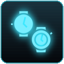
activate Apogee sandevistan
RimPunk/Abilities/RPC_Ability_ApogeeSandevistan.png
activate BioDyne berserk
RimPunk/Abilities/RPC_Ability_BioDyneBerserk.png
blood pump
RimPunk/Abilities/RPC_Ability_BloodPump.png

jump
RimPunk/Abilities/RPC_Ability_CyberJump.png

jump
RimPunk/Abilities/RPC_Ability_CyberJumpCharges.png
jump (paired)
RimPunk/Abilities/RPC_Ability_CyberJumpChargesPaired.png
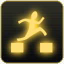
jump (paired)
RimPunk/Abilities/RPC_Ability_CyberJumpPaired.png
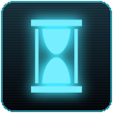
activate sandevistan
RimPunk/Abilities/RPC_Ability_DynalarSandevistan.png
electrifying monowire lash
RimPunk/Abilities/RPC_Ability_ElectrifyingMonowireLash.png
activate Falcon sandevistan
RimPunk/Abilities/RPC_Ability_FalconSandevistan.png
Kiroshi Clairvoyant optics scan
RimPunk/Abilities/RPC_Ability_KiroshiClairvoyantOpticsScan.png
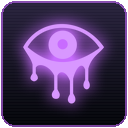
Kiroshi Doomsayer optics scan
RimPunk/Abilities/RPC_Ability_KiroshiDoomsayerOpticsScan.png
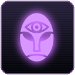
Kiroshi Oracle optics scan
RimPunk/Abilities/RPC_Ability_KiroshiOracleOpticsScan.png
Kiroshi Sentry optics scan
RimPunk/Abilities/RPC_Ability_KiroshiSentryOpticsScan.png
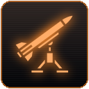
launcher: aimed shot
RimPunk/Abilities/RPC_Ability_LauncherAimed.png
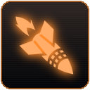
launcher: snap shot
RimPunk/Abilities/RPC_Ability_LauncherSnap.png
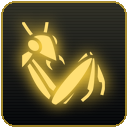
mantis dash
RimPunk/Abilities/RPC_Ability_MantisDash.png
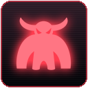
activate Militech berserk
RimPunk/Abilities/RPC_Ability_MilitechBerserk.png
monowire lash
RimPunk/Abilities/RPC_Ability_MonowireLash.png
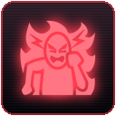
activate berserk
RimPunk/Abilities/RPC_Ability_MooreTechBerserk.png
optical camo
RimPunk/Abilities/RPC_Ability_OpticalCamo.png
thermal monowire lash
RimPunk/Abilities/RPC_Ability_ThermalMonowireLash.png
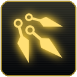
throw weapon
RimPunk/Abilities/RPC_Ability_ThrowWeapon.png
toxic monowire lash
RimPunk/Abilities/RPC_Ability_ToxicMonowireLash.png
activate Warp Dancer sandevistan
RimPunk/Abilities/RPC_Ability_WarpDancerSandevistan.png
activate Zetatech berserk
RimPunk/Abilities/RPC_Ability_ZetatechBerserk.png
activate Zetatech sandevistan
RimPunk/Abilities/RPC_Ability_ZetatechSandevistan.png
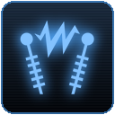
quickhack: short circuit
RimPunk/Abilities/RPC_Quickhack_ShortCircuit.png
Aldecaldos
RimPunk/Factions/RPC_Faction_Aldecaldos.png
Animals
RimPunk/Factions/RPC_Faction_Animals.png
Arasaka
RimPunk/Factions/RPC_Faction_Arasaka.png
Barghest
RimPunk/Factions/RPC_Faction_Barghest.png
Biotechnica
RimPunk/Factions/RPC_Faction_Biotechnica.png
Kang Tao
RimPunk/Factions/RPC_Faction_KangTao.png
Maelstrom
RimPunk/Factions/RPC_Faction_Maelstrom.png
MaxTac
RimPunk/Factions/RPC_Faction_MaxTac.png
Militech
RimPunk/Factions/RPC_Faction_Militech.png
Mox
RimPunk/Factions/RPC_Faction_Mox.png
NetWatch
RimPunk/Factions/RPC_Faction_NetWatch.png
Night Corp
RimPunk/Factions/RPC_Faction_NightCorp.png
Petrochem
RimPunk/Factions/RPC_Faction_Petrochem.png
Raffen Shiv
RimPunk/Factions/RPC_Faction_RaffenShiv.png
Scavengers
RimPunk/Factions/RPC_Faction_Scavengers.png
6th Street
RimPunk/Factions/RPC_Faction_SixthStreet.png
Trauma Team International
RimPunk/Factions/RPC_Faction_TraumaTeam.png
Tyger Claws
RimPunk/Factions/RPC_Faction_TygerClaws.png
Valentinos
RimPunk/Factions/RPC_Faction_Valentinos.png
Voodoo Boys
RimPunk/Factions/RPC_Faction_VoodooBoys.png
Wraiths
RimPunk/Factions/RPC_Faction_Wraiths.png
Zetatech
RimPunk/Factions/RPC_Faction_Zetatech.png
Aldecaldos
RimPunk/Factions/RPC_Faction_Aldecaldos_Settlement.png
Animals
RimPunk/Factions/RPC_Faction_Animals_Settlement.png
Arasaka
RimPunk/Factions/RPC_Faction_Arasaka_Settlement.png
Barghest
RimPunk/Factions/RPC_Faction_Barghest_Settlement.png
Biotechnica
RimPunk/Factions/RPC_Faction_Biotechnica_Settlement.png
Kang Tao
RimPunk/Factions/RPC_Faction_KangTao_Settlement.png
Maelstrom
RimPunk/Factions/RPC_Faction_Maelstrom_Settlement.png
MaxTac
RimPunk/Factions/RPC_Faction_MaxTac_Settlement.png
Militech
RimPunk/Factions/RPC_Faction_Militech_Settlement.png
Mox
RimPunk/Factions/RPC_Faction_Mox_Settlement.png
NetWatch
RimPunk/Factions/RPC_Faction_NetWatch_Settlement.png
Night Corp
RimPunk/Factions/RPC_Faction_NightCorp_Settlement.png
Petrochem
RimPunk/Factions/RPC_Faction_Petrochem_Settlement.png
Raffen Shiv
RimPunk/Factions/RPC_Faction_RaffenShiv_Settlement.png
Scavengers
RimPunk/Factions/RPC_Faction_Scavengers_Settlement.png
6th Street
RimPunk/Factions/RPC_Faction_SixthStreet_Settlement.png
Trauma Team International
RimPunk/Factions/RPC_Faction_TraumaTeam_Settlement.png
Tyger Claws
RimPunk/Factions/RPC_Faction_TygerClaws_Settlement.png
Valentinos
RimPunk/Factions/RPC_Faction_Valentinos_Settlement.png
Voodoo Boys
RimPunk/Factions/RPC_Faction_VoodooBoys_Settlement.png
Wraiths
RimPunk/Factions/RPC_Faction_Wraiths_Settlement.png
Zetatech
RimPunk/Factions/RPC_Faction_Zetatech_Settlement.png